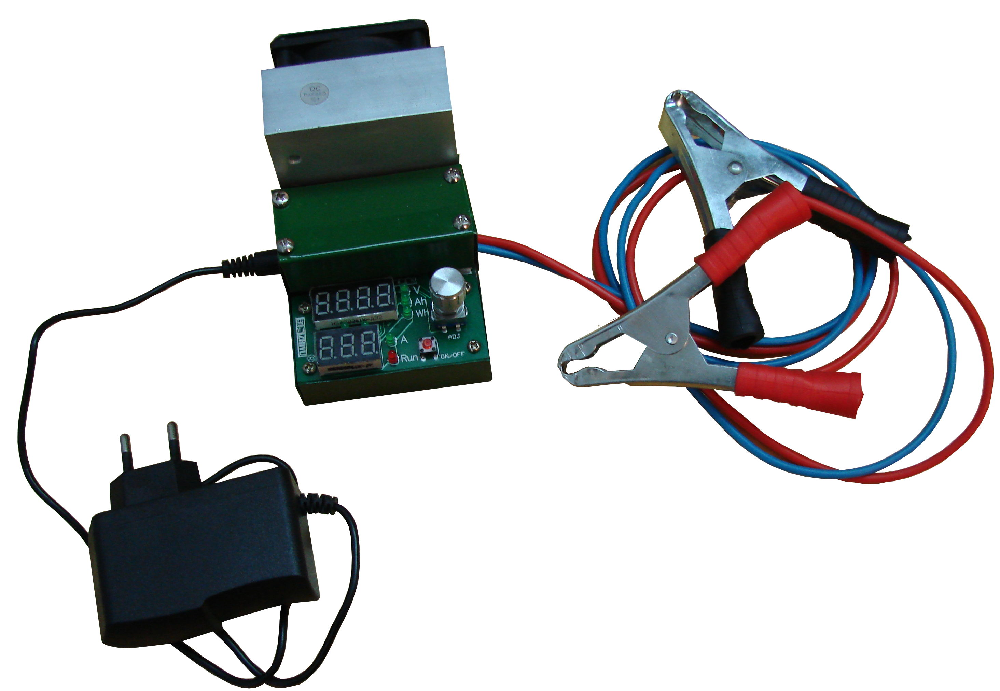
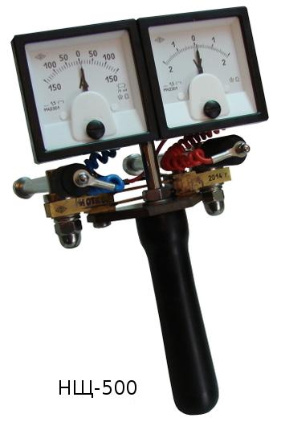
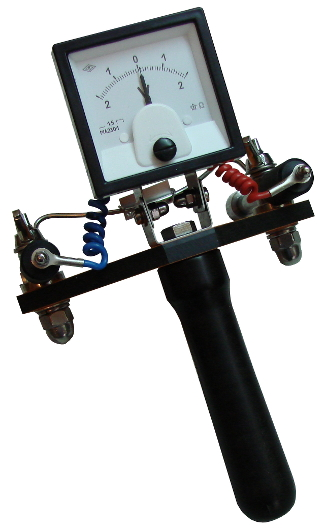
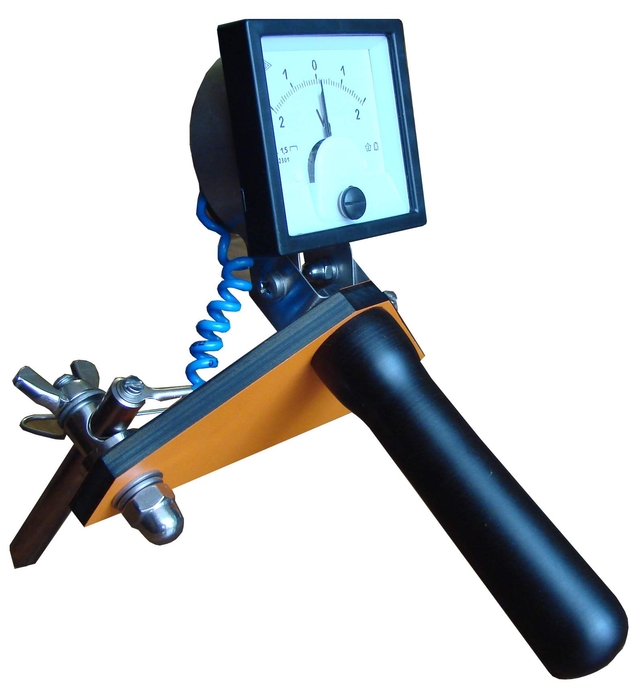

Для перехода щелкните по ссылке на желтом фоне:
Вилки нагрузочные для проверки щелочных аккумуляторов
Смотреть подробно:
(для перехода щелкните по ссылке или по картинке)
Испытательный нагрузочный прибор ИНП-110

Предназначен для определения фактической емкости в Ач и Втч:
- автомобильных стартерных аккумуляторых батарей напряжением 12 В, 24 В током нагрузки до 9,99 А;
- аккумуляторных батарей источников бесперебойного питания (ИБП)
напряжением от 3 В, 6 В, 12 В, 24 В током нагрузки от 0,2 до 9,99 А;
- других типов аккумуляторов и аккумуляторных батарей
(кислотных, щелочных, гелевых, и т. п.) напряжением от 1,0 до 30,0 В,
током нагрузки от 0,2 до 9,99 А;
Прибор может использоваться как электронная нагрузка для
тестирования источников питания постоянного тока - солнечных батарей,
генераторов и
т. п.
Вилки нагрузочные НЩ-500/ НЩ-500У

Вольтметр 2-0-2 В; Амперметр 150-0-150 А; кл. точн. 1,5 / 2,5; плавная регулировка тока; нагрузочный ток от 50 до 100 А при 1,0 В.
Вилка нагрузочная ПАЩ-500 (ПАЩ-500Л)

Вольтметр 2-0-2 В (по заказу 3-0-3 В); кл. точн. 1,5; ступенчатая регулировка тока; нагрузочный ток 50 А, 70 А, 110 А при 1,0 В.
ПАЩ-500 исполнение "Л" (ПАЩ-500Л) - комплектуется дополнительными
сопротивлениями (0,020±0,002) Ом; (0,025±0,002) Ом; (0,033±0,002) Ом.
Вилка нагрузочная универсальная НМ-300 (НМ-300Л)
Вольтметр 3-0-3 В; кл. точн. 1,5; ступенчатая регулировка тока; нагрузочные сопротивления для проверки свинцовых стартерных
аккумуляторов емкостью 40...100 Ач; 100...145 Ач; 145...200 Ач.
Нагрузочная вилка НМ-300, исполнение "Л" (НМ-300Л) - комплектуется
дополнительными сопротивлениями (0,020±0,002) Ом;(0,025±0,002) Ом;
(0,030±0,002) Ом; (0,033±0,002) Ом.
Вилка нагрузочная НМ-300Э

Вольтметр 2-0-2 В; кл. точн. 1,5; ступенчатая регулировка тока; нагрузочные сопротивления для проверки щелочных аккумуляторов типа НК-55, НК-125, НК-125П (электровозов, электропоездов и т. п. )
Вольтметр 3-0-3 В; кл. точн. 1,5; ступенчатая регулировка тока; нагрузочные токи:
- 65 А, 130 А , 250 А при 1,8 В - для кислотных аккумуляторов
- 50 А, 70 А, 110 А при 1,0 В - для щелочных акумуляторов
- плюс нагрузочные сопротивления 0,020 Ом, 0,025 Ом, 0,030 Ом, 0,033 Ом.
По дополнительным сопротивлениям заменяет 2ДБ661-141М.
Примечание: Здесь и далее по тексту под аккумулятором понимается одиночная щелочная аккумуляторная ячейка (банка) номинальным напряжением 1,2 В.
Не проверяйте щелочные аккумуляторы нагрузочными вилками, предназначенными для кислотных аккумуляторов!
При такой проверке не обеспечивается указанный на вилке нагрузочный ток!
Пример: Проверка (тест) щелочного аккумулятора производится вилкой для кислотных
аккумуляторов:
Нагрузочная вилка для кислотных аккумуляторов на ток Iкисл = 100 А имеет нагрузочное сопротивление (рассчитанное на напряжение
кислотного аккумулятора 2,0 В) и равное:
Rнагр = Uном.кисл. : Iкисл.= 2,0 В : 100 А = 0,02 Ом,
где Uном.кисл. = 2,0 В - номинальное напряжение кислотного аккумулятора.
При проверке такой вилкой щелочного аккумулятора (напряжение 1,2 В) фактический нагрузочный ток будет:
Iщел. = Uном.щелоч. : Rнагр. = 1,2 В : 0,02 Ом = 60 А,
где Uном.щелоч. = 1,2 В - номинальное напряжение щелочного аккумулятора.
Следовательно: При проверке щелочного аккумулятора
нагрузочной вилкой для кислотного аккумулятора на 100 А, фактический
нагрузочный ток будет не
100 А, а 60 А В результате, при проверке аккумулятор будет недогружен
по току в 1,67 раза, а следовательно в 1,67 раза возрастет вероятность
того, что
неисправный аккумулятор будет признан исправным, что в дальнейшем
вызовет ускоренный выход из строя всей аккумуляторной батареи.
Более того, в большинстве нагрузочных вилок для кислотных
аккумуляторов нагрузочная и измерительная цепи не разделены. При
контроле такими вилками щелочных аккумуляторов
имеет место падение напряжения на переходных сопротивлениях "вывод
аккумулятора - ножка нагрузочной вилки". Это сопротивление может
достигать 0,0098 Ом, что при
нагрузочном токе 50 А (нагрузочный ток для аккумулятора емкостью 250
Ач, при 5-ти часовом режиме разряда) даст падение напряжения 0,49 В.
Вольтметр такой вилки покажет напряжение проверяемого аккумулятора на
0,49 В меньше фактического! При увеличении нагрузочных токов,
погрешность показаний вольтметра вилки будет пропорционально
увеличиваться! А следовательно, при ремонте щелочных аккумуляторов не
исключены случаи признания неисправных (потерявших емкость)
аккумуляторов годными. То же касается проверки (тестирования) щелочных
аккумуляторов в эксплуатации.
Вилки НЩ-500 и ПАЩ-500 разработаны специально для контроля щелочных аккумуляторов и лишены вышеуказанных недостатков.
При использовании вилки НЩ-500 контролируется не только напряжение
испытуемого аккумулятора но и ток, протекающий через нагрузочное
сопротивление!
ОБЩЕЕ
Под техническим состоянием аккумулятора
понимается его способность поддерживать соответствующее степени его
заряда напряжение при
приложении к нему электрический нагрузки, и, как следствие – степень
соответствия его фактической емкости паспортной.
При работе аккумуляторов в составе батареи большое значение имеет
одинаковое техническое состояние включенных в нее аккумуляторов.
Отстающие по емкости и напряжению аккумуляторы снижают емкость
всей батареи, с течением времени и при глубоких разрядах
переполюсуются, и становятся добавочными сопротивлениями,
ограничивающим ток, напряжение и емкость всей батареи. Своевременное
выявление отстающих аккумуляторов и устранение их отставания дает
возможность более эффективно
использовать дорогостоящую аккумуляторную батарею, продлить срок ее
службы и сэкономить электроэнергию при зарядах.
При контроле аккумуляторы, имеющие неудовлетворительное техническое
состояние – (отстающие аккумуляторы) отдают меньший ток и имеют более
низкое напряжение,
что определяется по измерительным приборам нагрузочной вилки. Кроме
того, при помощи нагрузочной вилки выявляются переполюсованные
аккумуляторы.
Для щелочных аккумуляторов номинальным током считается ток 5-часового режима разряда.
Тем не менее, большинство щелочных аккумуляторов допускают разряд
максимальным током, равным току 3-часового режима разряда, или даже
током равным току 1-часового режима разряда.
Максимальный ток разряда указывается заводом-изготовителем в паспорте
на аккумулятор.
Контроль технического состояния щелочного аккумулятора номинальным
током (ток 5-часового режима разряда) малоэффективен, т. к. аккумулятор
практически не нагружается.
Гораздо эффективней контроль максимальным током разряда, или током
близким к нему (т. е. током большим тока 5-ти часового режима разряда).
В этом случае, по падению напряжения
под нагрузкой, и по току нагрузки можно с достаточной степенью
уверенности судить о техническом состоянии аккумулятора и возможности
его дальнейшей эксплуатации.
Вилка нагрузочная НЩ-500, кроме вольтметра, имеет амперметр для
контроля и последующего сравнения нагрузочного тока отдаваемого разными
аккумуляторами в батарее.
Вилка нагрузочная ПАЩ-500 имеет ступенчатую регулировку нагрузочного тока.
Для перехода щелкните по ссылке на желтом фоне: